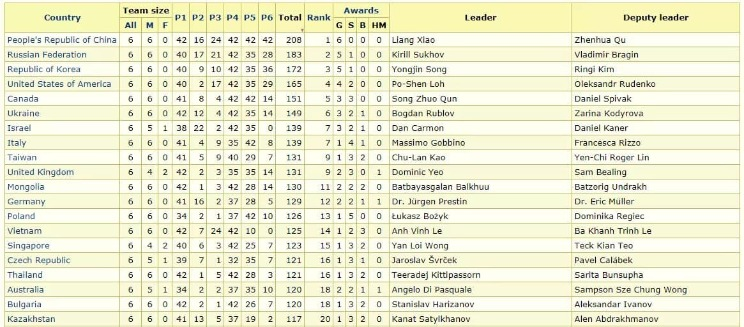

今年IMO成績出爐
團體成績中國世界第一
囊括世界唯一滿分金牌 總分大幅領先
俄國第二
南韓第三
美國跌落到第四
台灣今年進步不少 世界第九，好樣！！
師大附中的辛瑋軒同學勇奪世界第三高分！！
———————————————————
很多人以為美國的教育 尤其科學教育很成功，這話題值得探討。
其實綜觀近二十年來，美國本土學生願意在大學學習科學工程技術的比例遠低於亞洲學生，尤其華人世界。本土菁英多往醫學、法律、金融發展（唯錢是問）。
美國K12以下的教育是頭小尾大的M型分佈，中產精英家庭在學校體制外極力栽培。
美國的基礎科學、科技發展，極度仰賴外來移民（歐亞），在他們的頂尖名校的STEM科系，從教授到學生，外來移民留學的比例遠高於人口比例分佈。
看一個客觀的數據：
象徵著一個國家基礎科研實力的數學大獎「費爾茲獎」（含金量超過諾貝爾奬）：
從西元2000年後，獲獎的18位數學家只有ㄧ位美國籍！而這位印度裔還是加拿大長大然後留美（他的指導教授是英籍的大牛懷爾斯）
然後去看看俄國、法國的獲獎人數，完全碾壓美國！
參考一些先進國家
美英日教育政策採自由主義、放任式的學習
（日本文化受儒家影響，家庭教育可能非自由主義）
法德俄新（加坡）教育政策採非自由主義（分流政策）
英日在過去30年的去精英化政策中產生許多後遺症，政策也在修正中。
台灣過去幾十年的教育政策走向，唯美國馬首是瞻（廣設大學、自學班、多元入學、學習歷程、素養教育…）
但我們真的理解美國教育政策的利弊得失嗎？
（大家羨慕美國的頂尖醫療與高等教育水平 ，但你可明瞭 他們極為昂貴的代價！這個話題很大，以後有機會 會寫文探討）
他山之石 可以攻錯
https://www.facebook.com/groups/695697124716309/permalink/854037522215601/
